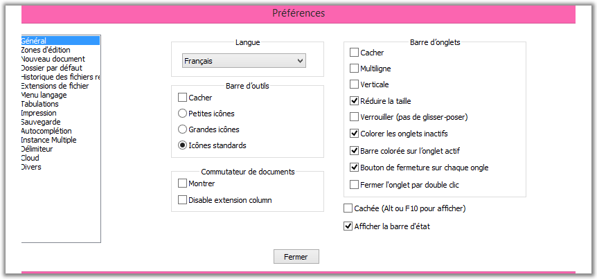

Préférences
Vous pouvez configurer de nombreux aspects de Notepad++ en utilisant la boîte de dialogue "Préférences". La boîte
de dialogue se compose de plusieurs onglets qui contiennent des options qui sont pertinentes sur certains aspects de Notepad++
(par exemple, l'interface ou les options de sauvegarde).

Les paramètres généraux permettent de contrôler l'apparence de l'interface principale. Vous pouvez contrôler la barre d'onglets,
la barre d'outils, la barre d'état et le menu à partir d'ici, ainsi que la langue de l'interface.
- Localisation:
- Cette liste déroulante affiche toutes les langues que vous pouvez utiliser pour
que Notepad++ parle votre langue. Si vous cliquez sur une de ces langues, tous les éléments d'interface utilisateur sont immédiatement traduits dans cette langue. Les fichiers de localisation sont
conservés dans le sous-dossier de localisation \localization de Notepad++.
- Barre d'outils:
- Cacher - Cache complètement la barre d'outils:.
- Les choix suivants donnent un résultat immédiat, mais parfois un redémarrage est nécessaire
pour charger correctement les icônes
- Petites icônes - Notepad++ utilise des icônes de petite taille pour la barre
d'outils. Cela peut concerner les icônes standard ou des icônes personnalisées.
- Grandes icônes - Notepad++ utilise des icônes de grande taille pour
la barre d'outils. Cela peut peut concerner les icônes standard ou des icônes personnalisées.
- Icônes standard - Ce sont les icônes intégrés par défaut.
C'est aussi la seule option utilisable pour les icônes des plugins en barre d'outils.
- Barre de menu:
- Cacher - Si vous cochez cette option, la barre de menus se masque automatiquement. Pour montrer
la barre de menu temporairement, appuyez sur la touche Alt ou la touche F10.
La sélection d'une option, la touche Echapp ou
la sélection d'une autre fenêtre masquera de nouveau le menu.
- Barre d'état:
- Afficher la barre d'état - Cocher pour afficher la barre d'état.
- Commutateur de Documents:
- Détermine comment s'affiche le changeur de document vertical:
- Montrer: afffiche le commutateur
- Masquer la colonne des extensions:par défaut, les extensions sont affichées dans une colonne séparée à droite. La colonne peut être masquée.
- barre d'onglets:
- Cacher - Si vous cochez cette option, la barre d'onglets
est masquée. Vous pouvez toujours ouvrir plusieurs documents, mais vous devrez passer
par les raccourcis clavier plutôt que par l'utilisation de la barre d'onglets.
- Multi-Ligne - Si vous cochez cette option,
les pnglets qui ne tiennent pas en longueur sur la barre d'onglets seront visibles sur les lignes
suivantes. Sinon, deux boutons fléchés permettent de faire défiler les onglets.
Notez que le document actif sera toujours sur la rangée du bas.
- Vertical - Cochez cette option pour une rotation de 90° vers la gauche
du libellé de l'onglet de la barre ainsi que le déplacement sur le côté gauche de l'écran.
- Réduire la taille - Adapte la police et les icones pour que le maximum d'informations de
l'onglet soit visible.
- Verrouiller (pas de glisser/déposer) - désactive la possibilité de trier les documents
en faisant glisser les onglets.
- Colorer les onglets inactifs - Si
cette option est activée, les onglets inactifs auront une couleur de fond
particulière (voir: Paramètres, Configurateur de coloration syntaxique).
- Barre colorée sur l'onglet actif - Si vous cochez cette
case, l'onglet actif de la vue active aura une ligne colorée (par défaut orange, voir Paramètres
Configurateur de coloration syntaxique).
- Bouton de fermeture sur chaque onglet -
cette option ajoute un bouton de fermeture sur chaque onglet, pour fermer le
document courtant.
- Fermer
l'onglet par Double clic - Si elle est cochée, double-cliquer
ferme l'onglet.
Zone d'édition
Ces paramètres affectent le comportement et l'apparence de Scintilla, l'outil d'édition utilisé par Notepad++.
- Paramètres du curseur :
- Largeur - Définit la largeur en pixels du curseur, ou le transforme en un bloc
qui est de la taille du caractère en cours (si imprimable, sinon de la taille d'un espace).
- Clignotement - Variation de vitesse (R) pour ralentir (L) pour
augmenter (entre non visible et toujours allumé).
Vous pouvez changer la couleur du curseur
(Configurateur de coloration syntaxique).
- Multi-édition
- Vous pouvez activer ou désactiver cette fonctionnalité grâce à la case à cocher. Vous
pourrez sélectionner des zones non contiguës (voir Sélection de texte )
et rechercher un texte dans toutes les parties de la sélection.
- Style de la marge d'escamotage
- Le style des icônes qui indiquent le statut de pliage (Voir
plier/déplier ). Choisissez parmi les 4 types proposés, ou Aucun pour désactiver l'escamotage.
- Largeur des lignes
- Afficher la marge Droite -
Activer cette option tracera un trait vertical à travers le document à l'emplacement voulu.
- Mode.
- Afficher un filet vertical - Si
sélectionné, le bord sera matérialisé en utilisant une ligne en arrière-plan
- Colorer l'arrière plan - Si sélectionné, le bord sera matérialisé en changeant
la couleur de fond des caractères au delà du bord. Vous pouvez changer la couleur avec le
configurateur de colorisation syntaxique .
- Nombre de colonnes : La distance en colonnes (déterminée par la taille
de l'espace) à laquelle le bord sera matérialisé.
- Autres options
- Afficher
la numérotation des lignes - Si elle est cochée, les numéros de ligne seront
visible. Vous pouvez changer la couleur avec le Configurateur de coloration syntaxique . Lorsqu'elle
est visible, la numérotation peut accueillir trois chiffres, et s'élargira
si nécessaire pour afficher des nombres de plus grande longueur.
- Afficher la marge des signets - Si elle est cochée, la marge des signets sera
visible.
- Surligner la ligne courante
- Si elle est cochée, la ligne à laquelle le curseur est présent sera
visible avec une couleur de fond spéciale que vous pouvez modifier avec
le Configurateur de coloration syntaxique.
- Désactiver le défilement intelligent (si vous avez un problème de Touchpad)
- Certains pilotes système s'interposent entre l'utilisateur et le composant Scintilla, empêchant celui-ci de réagir.
Ne cochez cette case que si vous n'arrivez pas à ufaire défiler le texte avec la molette de la souris - le problème apparaît plutôt sur les portables.
- Le curseur Border width contrôle la largeur de la frontière de la zone d'édition, qui est aussi la distance entre l'onglet et le texte édité. Sa valeur en pixels s'affiche à droite du curseur.
En fonction de la résolution de votre écran, vous pouvez ajuster ce paramètre pour am"liorer la lisibilité ou augmenter l'espace disponible.
Nouveau document
Ces options changent la façon de créer les nouveaux documents.
- Nouveau document:
- Encodage : Permet de choisir l'encodage
par défaut à utiliser (voir encodage ).
- Format des sauts de ligne : permet de choisir quel est le format de saut de
ligne utilisé par défaut (voir Format Saut à la ligne ).
- Langage par défaut : définit quelle coloration syntaxique sera utilisée pour tout document
nouvellement créé. Sélectionne la bonne occurrence dans le menu Langage. Les langages définis par l'utilisateur
et les langages externes ne peuvent pas être sélectionnés.
Répertoire par défaut
- Dossier par défaut (Ouvrir / Enregistrer):
- Ce paramètre contrôle le répertoire proposé par Notepad++ à chaque utilisation des boites de dialogues Ouvrir / enregistrer.
Il est à noter que le répertoire par défaut n'est pas le même que le répertoire courant (répertoire de travail) de Notepad++.
- Utiliser celui du document actuel - Si cette option est sélectionnée, le répertoire par défaut
sera le répertoire du fichier actuellement actif. Si le fichier est un nouveau document non enregistré, ce sera le répertoire de
travail de Notepad++.
- Mémoriser le dernier répertoire sélectionné - Si cette option est sélectionnée, le répertoire par défaut sera
d'abord le répertoire où Notepad++ a été lancé (vous pouvez le contrôler en ajustant le raccourci que vous utilisez pour
Notepad++), en suivant le répertoire affiché dans les boites de dialogues Ouvrir / Enregistrer.
- - Le répertoire par défaut peut être configuré pour un chemin
d'accès donné, saisi dans la zone de texte contiguë ou par le bouton Parcourir ... .
Si le chemin n'est plus valide, le répertoire de travail de Notepad++ sera utilisé. Vous êtes autorisé à utiliser
des variables d'environnement, en utilisant la syntaxe %var-name% des fichiers batch.
- Historique des fichiers récents :
- Le nombre maximum de fichiers récents - N'importe quel nombre de 0 à 30.
Contrôle le nombre de fichiers qui sont enregistrés dans l'historique. 0 désactive l'enregistrement.
- Ne pas vérifier au lancement - Si elle est cochée, Notepad++ ne vérifiera
pas la validité des fichiers de l'historique. Si elle est décochée, Notepad++ va vérifier l'existence de chaque fichier.
Cette option est recommandée à l'activation dans le cas d'utilisation de fichiers en réseau.
- In Submenu : Quand cette case est cochée, la liste se présente à partir d'un sous-menu de .
Sinon, la liste est insérée sous forme d'entrées supplémentaires vers le bas de .
- Only File name : Avec cette option, la liste des fichiers récents ne montre que les noms de fichier, sans leur chemin.
- Full File Name Path : Avec cette option, la liste des fichiers récents montre les noms complets des fichiers, avec l'intégralité de leur chemin.
- Customize maximum length : Semblable à l'option précédente, mais les noms complets de fichier
sont tronqués s'ils sont trop longs. En activant le bouton, il apparaît un lien avec la longueur maximale applicable (100 par défaut).
Ce paramètre peut être modifié en cliquant le lien.
Association de fichier
Vous pouvez associer des fichiers à Notepad++, pour qu'il démarre à l'ouverture de ces fichiers.
Sélectionnez un type de fichier, puis sélectionnez l'extension désirée et appuyez sur -> pour associer le fichier. Pour ajouter
un type personnalisé de fichier, sélectionnez Personnaliser, entrez l'extension et appuyez sur le ->
Pour supprimer l'association, sélectionnez l'extension à dissocier et appuyez sur <- .
Menu Langage
Vous pouvez sélectionner les langages qui sont disponibles dans le menu .
Dans les langages disponibles de la liste figurent les langages qui sont actuellement visibles.
Pour masquer un langage dans le menu, sélectionnez-le et appuyez sur le bouton > pour le transférer vers les éléments cachés. Pour le faire réapparaitre, sélectionnez-le dans la liste des langages cachés
et transférez-le vers les langages visibles en appuyant sur le bouton < .
L'aspect du menu des langages peut être encore contrôlé par la case à cocher
Compacter les langages . Quand elle est cochée, les langages dont les noms commencent par la même lettre
sont regroupées dans un sous-menu, au lieu d'être tous présents dans le menu lui-même.
Tabulations
Les paramètres de tabulation peuvent être ajustés langage par langage. La liste de droite a tous les langages prédéfinis, ainsi que
l'item [default] (par défaut). Ce dernier s'applique à tous les langages qui n'ont pas un paramètre spécifique, ainsi qu'à tous
les langages définis par l'utilisateur. Le cadre au dessous permet le réglage des paramètres de tabulation pour le langage sélectionné:
- Taille des tabulations - Taille en caractères espace d'un caractère de tabulation dans le document.
- Remplacer par des espaces - La tabulation se fera au moyen d'espaces et non pas du caractère
Tab. Le nombre d'espaces utilisés dépend de l'option précédente.
Imprimer
Utilisez ces paramètres pour ajuster la mise en page et les couleurs utilisées pour imprimer un document, ainsi que
l'en-tête et le pied de page. Ceux-ci peut être n'importe quelle chaîne ordinaire ou une variable qui va changer en fonction du document imprimé.
- Imprimer la numérotation des lignes - Si l'option est sélectionnée, la numérotation sera imprimée aussi.
- Option couleur:
- Tel qu'à l'écran - couleurs d'impression exactement comme elles sont sur l'écran.
- Inverser - Impression du document avec une couleur de fond inversé
(blanc devient noir par exemple, et vice versa) et la couleur de premier plan par défaut inversé.
Toutes les autres couleurs resteront les mêmes.
- Noir et blanc - Tous les textes seront imprimés en noir sur fond blanc.
- Aucune couleur de fond -
Tout les textes gardent leurs couleurs, mais les couleurs de fond (y compris la couleur par défaut) seront imprimées en blanc.
- Variables
- Vous pouvez utiliser des variables dans l'en-tête/pied de page. Il y a d'origine des variables énumérées renseignées par défaut,
mais vous pouvez également utiliser n'importe quelle variable utilisée par la boîte de dialogue Exécuter (voir
commandes ). La syntaxe est la même. Pour ajouter une variable prédéfinie dans le menu déroulant, cliquez sur
Ajouter . Le nom sera automatiquement copié dans la zone préalablement sélectionnée.
- En-tête:
- Contrôle le texte d'en-tête. Si n'importe quel texte en-tête est présent, il sera séparé du document par une ligne.
Utilisez les différents contrôles d'édition de modification de texte ajouté à l'en-tête. Vous pouvez ajouter du texte dans
l'en-tête de gauche, de droite et du centre. Vous pouvez chosir une police de caractère spécifique pour l'en-tête.
- Pied de page:
- Contrôle le texte de bas de page. Mêmes fonctionnalités que pour l'en-tête.
Sauvegarde
- Sauvegarde :
Contrôle le comportement de sauvegarde. Vous pouvez
effectuer une sauvegarde automatique de chaque fichier modifié dans Notepad++.
En outre, les deux options suivantes peuvent être utilisées:
- Se souvenir de la session en cours pour le lancement prochain - Si l'option est cochée,
l'ensemble des dossiers ouverts dans Notepad++ sera ouvert à nouveau lorsque Notepad++ sera rouvert.
- Sauvegardes et enregistrements de session périodiques
Si cette case est cochée, Notepad++ stockera à intervalles réguliers le contenu de tous les documents ouverts
(sauvegardés ou non) des deux vues ainsi qu'un fichier de session les décrivant.
Cet état sera restauré à la réouverture. Le nombre de seconde sémarant les instantanés
peut être renseigné sous forme d'un nombre entier (7 par défaut).
Les options suivantes concernent les copies de sauvegarde lors d'un enregistrement:
- Aucun - Pas de sauvegardes .
- Simple sauvegarde - Une sauvegarde est enregistrée dans un fichier portant le même nom et
l'extension .bak est ajoutée (l'extension d'origine est préservée).
- sauvegarde Détaillée - même utilisation que l'option simple mais .bak est
remplacé par un horodatage.
- Dossier spécifique - Si elle est cochée, un répertoire de sauvegarde
personnalisé est utilisé au lieu de sauver dans le même répertoire que le fichier
d'origine.
Saisie semi-automatique
- L'auto-complétion:
Voir saisie semi-automatique pour une explication du dispositif.
- Activer Auto-complétion - Si elle est cochée, Notepad++ va essayer de compléter le mot courant à partir des
caractère déjà écrits.
- Complétion de fonction: essayer de compléter le mot courant en utilisant la liste
des fonctions du langage courant.
- Complétion de mot : essayer de compléter le mot courant en utilisant les mots dans le document.
- Complétion de fonction et de mot : essayer de compléter le mot courant en utilisant les mots dans le document et les fonctions du langage.
- à Partir du .. caractère saisi Entrez le nombre de caractères nécessaires avant que
Notepad++ tente de compléter le mot en cours de frappe. Les valeurs autorisées vont de 1 à 9.
- Paramètres affichés durant la saisie - Si l'option est cochée, quand un
masque est ajouté qui marque le début d'une liste d'arguments de fonction
en cours de saisie, les paramètres de la fonction seront montrés dans une info-bulle.
- Auto-completion des délimiteurs usuels, en cochant les cses correspondantes ( () [] {} '' "" ).
Possibilité d'ajouter jusqu'à trois paires supplémentaitres.
Divers
Ces paramètres contrôlent d'autres aspects de Notepad++.
- Commutateur de Document
- Activer - Pour activer le sélecteur de document.
- Activer la liste MRU - Gouverne l'ordre des fichiers dans le sélecteur de document.
- Coloriage automatique
-
Quand cette option est activée,
toutes les occurrences du mot qui correspond à la sélection active en ce moment à l'écran sera en surbrillance. Vous pouvez contrôler
la couleur en utilisant le Configurateur de coloration syntaxique.
- Activer le coloriage automatique - Pour activer la fo,ctionnalité.
- Respecter la casse - Par défaut, toutes les occurences sont coloriées quelle qu'en soit la capitalisation.
On peut ainsi limiter le nombre d'éléments marqués, rendant l'affichage plus clair.
- Paramétrage des liens cliquables :
Cette option rend les adresses web cliquables (tous protocoles).
L'adresse s'ouvre alors dans votre navigateur par double clic,
s'il est correctement installé.
- Activer - Si elle est activée, les adresses <protocole>:// sont cliquables dès
qu'ils ont été saisis et que le caret n'est plus dessus.
- Pas de soulignement - Si elle est activée, cette option élimine
le soulignement standard des liens hypertexte.
- Auto-détection de statut des fichiers:
Vérifie automatiquement l'état de chaque fichier ouvert lorsque Notepad++ est activé depuis l'arrière-plan.
- Détection automatique - Vérifier l'état pour permettre la détection.
- Mise à jour sans alerte - Si un changement dans un fichier est détecté
(modification de contenu), Notepad++ va effectuer le rechargement du fichier sans alerte.
- Aller à la dernière ligne, après mise à jour - Si elle est cochée, lorsqu'un
fichier est rechargé après détection d'une modification externe, il défilera jusqu'à la dernière ligne
(utile pour les fichiers log).
- Surligner les éléments:
L'élément est
l'unité de base pour souligner les langages XML / HTML. Lorsque le curseur est situé sur une balise ou à l'intérieur d'un élément,
l'entrée élément correspondant sera colorisée. Vous pouvez changer les couleurs en utilisant le
Configurateur de coloration syntaxique.
- Activé - Cochez pour activer la mise en évidence des balises.
- les attributs des éléments - Si elle est cochée, les attributs d'un élément seront surlignés.
- Dans les zones de commentaire / php / asp - Si elle est cochée, les balises
dans un script php / asp seront surlignées.
- Cloud
Sur cet onglet, en fonction des comptes distants dont vous disposez, vous pouvez
sauvegarder votre configuration "dans le nuage" plutôt que sur votre ordinateur. Les media pris en compte sont DropBox, OneDrive et GoogleDrive.
- Sessions
- Si une extension est inscrite comme extension pour fichiers session , Notepad++ va
essayer d'ouvrir ces fichiers comme fichiers de session au lieu de fichiers normaux. Cela vous permet de simplement
fournir un fichier de session via la ligne de commande ou toute autre méthode d'ouverture d'un fichier afin de charger
une session dans Notepad++.
- Autres options
- Activer mise à jour automatique: Si elle est cochée, Notepad++
tentera de trouver sur une mise à jour au démarrage. Vous avez la possibilité de reporter la mise à niveau s'il en trouve une.
- Auto-détection de l'encodage: Cochée par défaut, cette case autorise ou non
Notepad++ à utiliser des heuristiques de détection de l'encodage des fichiers.
Si elle est cochée, Notepad++
tentera de trouver sur une mise à jour au démarrage. Vous avez la possibilité de reporter la mise à niveau s'il en trouve une.
- Auto-indentation - Si elle est cochée, l'ajout d'une nouvelle ligne se fera
avec le même retrait que la précédente.
- Réduire dans la zone de notifications - Si l'option est cochée,
la minimisation de Notepad++ ajoutera une icône
à la barre d'état système (zone de notification). En cliquant sur
cette icône, Notepad++ reviendra au premier plan.
- Afficher uniquement les noms de fichier dans la barre de titre - Si elle est cochée, au lieu du
chemin complet vers le fichier actif, c'est le nom du fichier sans le répertoire qui sera affiché.
- En SQL, l'antislash est un caractère d'échappement - Puisque les différents
dialectes de SQL ont des interprétations différentes de l'antislash, vous pouvez en décider ici.